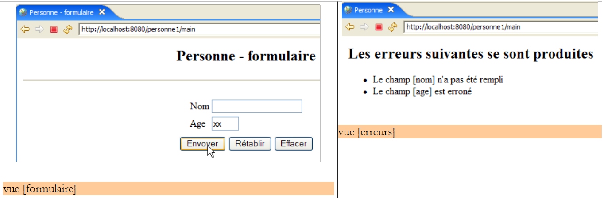
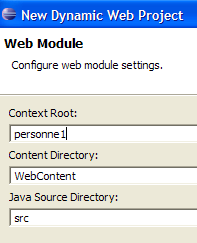
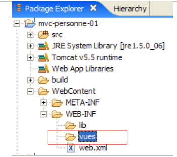
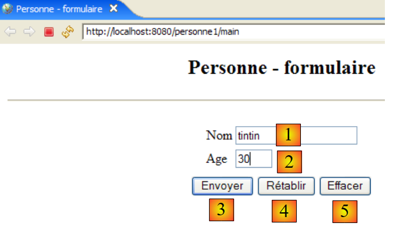
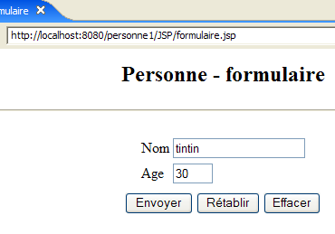
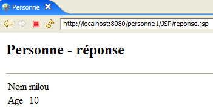

5. Web 应用程序 MVC [personne] – 版本 1
5.1. 应用程序的视图
该应用程序沿用了前几个示例中使用的表单。应用程序的首页如下：

我们将此视图命名为 [formulaire]。如果输入正确，这些数据将显示在名为 [réponse] 的视图中：

如果输入有误，错误将在名为 [erreurs] 的视图中显示：

5.2. 应用程序架构
Web 应用程序 [personne1] 将采用以下架构：

该架构为单层架构：不存在 [métier] 或 [dao] 层，仅有一个 [web] 层。 [ServletPersonne] 是应用程序的控制器，负责处理所有客户端请求。为响应这些请求，它会调用三个视图之一：[formulaire, réponse, erreurs]。
我们需要确定控制器 [ServletPersonne] 如何在收到用户请求时确定应采取的操作。 客户端请求是一个 HTTP 流，其形式取决于请求是通过 GET 命令还是 POST 命令发出的。
请求 GET
在这种情况下，HTTP数据流如下所示：
第 1 行指定了请求的 URL，例如：
可以使用该 URL 来指定要执行的操作。可以使用多种方法：
- URL中的参数指定操作，例如 [/appli?action=ajouter&id=4]。在此，参数 [action] 向控制器指示所请求的操作。
- URL 的最后一个元素指定操作，例如 [/appli/ajouter?id=4]。在此，控制器使用 URL 的最后一个元素 [/ajouter] 来确定应执行的操作。
还有其他解决方案。前两种方案较为常见。
请求 POST
在此情况下，HTTP 的处理流程如下：
第 1 行指定了请求的 URL，例如：
可以使用该 URL 来指定要执行的操作，例如 GET。 对于 GET，参数 [action] 被整合到了 URL 中。此处的情况也可能与此类似，例如：
但参数 [action] 也可能包含在已发布的参数中（如上文第 15 行），例如：
接下来，我们将使用这些不同的方法来指示控制器应执行的操作：
- 将参数 action 嵌入请求的 URL 中：
- 提交参数 action：
- 使用 URL 的最后一个元素作为操作名称：
5.3. Eclipse 项目
要为 Web 应用程序 [personne1] 创建 Eclipse 项目 [mvc-personne-01]，请按照第 3.1 节中描述的步骤进行操作。

请勿保留默认提供的 [mvc-personne-01] 上下文。请如下所示选择 [personne1]：

最终结果如下：

如果需要更改Web应用程序的上下文，请使用选项[clic droit sur projet -> Properties -> J2EE]：

在 [1] 中指定新的上下文。
我们将在文件夹 [WEB-INF] 中创建子文件夹 [vues]：[clic droit sur WEB-INF -> New -> Folder]：
 |  |
现在的新项目如下：

完成后，项目将变为：

- 控制器 [ServletPersonne] 位于文件夹 [src] 中
- 视图 [formulaire, réponse, erreurs] 对应的页面 JSP 位于文件夹 [WEB-INF/vues] 中，这导致用户无法像下例所示那样直接请求这些页面：

接下来我们将介绍 Web 应用程序 [/personne1] 的各个组件。建议读者在阅读过程中逐步创建这些组件。
5.4. Web 应用程序 [personne1] 的配置
应用程序 /personne1 中的文件 web.xml 将如下所示：
<?xml version="1.0" encoding="UTF-8"?>
<web-app id="WebApp_ID" version="2.4"
xmlns="http://java.sun.com/xml/ns/j2ee"
xmlns:xsi="http://www.w3.org/2001/XMLSchema-instance"
xsi:schemaLocation="http://java.sun.com/xml/ns/j2ee http://java.sun.com/xml/ns/j2ee/web-app_2_4.xsd">
<display-name>mvc-personne-01</display-name>
<!-- ServletPersonne -->
<servlet>
<servlet-name>personne</servlet-name>
<servlet-class>
istia.st.servlets.personne.ServletPersonne
</servlet-class>
<init-param>
<param-name>urlReponse</param-name>
<param-value>
/WEB-INF/vues/reponse.jsp
</param-value>
</init-param>
<init-param>
<param-name>urlErreurs</param-name>
<param-value>
/WEB-INF/vues/erreurs.jsp
</param-value>
</init-param>
<init-param>
<param-name>urlFormulaire</param-name>
<param-value>
/WEB-INF/vues/formulaire.jsp
</param-value>
</init-param>
</servlet>
<!-- 映射 ServletPersonne-->
<servlet-mapping>
<servlet-name>personne</servlet-name>
<url-pattern>/main</url-pattern>
</servlet-mapping>
<!-- 主页文件 -->
<welcome-file-list>
<welcome-file>index.jsp</welcome-file>
</welcome-file-list>
</web-app>
该配置文件说明了什么？
- 第 34-37 行：URL /main 由名为 personne 的 Servlet 处理
- 第 10-13 行：名为 personne 的 Servlet 是类 [ServletPersonne] 的一个实例
- 第14-19行：定义了一个名为[urlReponse]的配置参数。这是视图[réponse]的URL。
- 第 20-25 行：定义了一个名为 [urlErreurs] 的配置参数。这是视图 [erreurs] 的 URL。
- 第 26-31 行：定义了一个名为 [urlFormulaire] 的配置参数。这是视图 [formulaire] 的 URL。
- 第 40 行：[index.jsp] 将作为应用程序的首页。
视图 [formulaire, réponse, erreurs] 中的页面 JSP 的 URL 各自对应一个配置参数。这样就可以在不重新编译应用程序的情况下移动它们。
当用户请求 URL [/personne1] 时，将由文件 [index.jsp] 返回响应（主页文件，第 40 行）。该文件位于文件夹 [WebContent] 的根目录下：

其内容如下：
<%@ page language="java" contentType="text/html; charset=ISO-8859-1"
pageEncoding="ISO-8859-1"%>
<!DOCTYPE HTML PUBLIC "-//W3C//DTD HTML 4.01 Transitional//EN">
<%
response.sendRedirect("/personne1/main");
%>
页面 [index.jsp] 仅将客户端重定向至 URL [/personne1/main]。 因此，当浏览器请求 URL [/personne1] 时，[index.jsp] 会向其发送以下来自 HTTP 的响应：
- 第 1 行：HTTP/1.1 响应，指示服务器重定向至另一个 URL
- 第4行：浏览器应重定向到的URL
收到此响应后，浏览器将按要求（第4行）请求URL [/personne1/main]。 应用程序 [/personne1] 中的文件 [web.xml] 表明，该请求将由控制器 [ServletPersonne] 处理（第 35-36 行）。
5.5. 视图代码
我们从编写 Web 应用程序的视图开始。这些视图有助于明确用户在图形界面方面的需求，并且可以在没有控制器的情况下进行测试。
5.5.1. 视图 [formulaire]
该视图用于显示姓名和年龄的输入表单：

类型 HTML | 名称 | 角色 | |
<input type="text"> | txtNom | 输入姓名 | |
<input type="text"> | txtAge | 输入年龄 | |
<input type="submit"> | 将输入的值发送至服务器，URL为 /personne1/main | ||
<input type="reset"> | 将页面恢复至浏览器最初接收时的状态 | ||
<input type="button"> | 用于清除输入字段 [1] 和 [2] 的内容 |
该页面由 JSP [formulaire.jsp] 生成。其模板由以下元素组成：
- [nom]：在会话属性中找到的名称（字符串），与键“nom”相关联
- [age]：在会话属性中找到的年龄（字符串），与键“age”相关联
当用户请求 URL [/personne1/main]、c.a.d 时，将生成视图 [formulaire]。控制器 URL 为 [ServletPersonne]。 生成视图 [formulaire] 的页面 JSP 和 [formulaire.jsp] 的代码如下：
<%@ page language="java" contentType="text/html; charset=ISO-8859-1"
pageEncoding="ISO-8859-1"%>
<!DOCTYPE HTML PUBLIC "-//W3C//DTD HTML 4.01 Transitional//EN">
<%
// 获取模型数据
String nom=(String)request.getAttribute("nom");
String age=(String)request.getAttribute("age");
%>
<html>
<head>
<title>Personne - formulaire</title>
</head>
<body>
<center>
<h2>Personne - formulaire</h2>
<hr>
<form method="post">
<table>
<tr>
<td>Nom</td>
<td><input name="txtNom" value="<%= nom %>" type="text" size="20"></td>
</tr>
<tr>
<td>Age</td>
<td><input name="txtAge" value="<%= age %>" type="text" size="3"></td>
</tr>
<tr>
</table>
<table>
<tr>
<td><input type="submit" value="Envoyer"></td>
<td><input type="reset" value="Rétablir"></td>
<td><input type="button" value="Effacer"></td>
</tr>
</table>
<input type="hidden" name="action" value="validationFormulaire">
</form>
</center>
</body>
</html>
- 第 6-7 行：页面 JSP 首先从请求 [request] 中获取其模型中的 [nom, age] 元素。 在应用程序的正常运行中，将由控制器 [ServletPersonne] 构建该模型。
- 第 18-38 行：页面 JSP 将生成一个表单 HTML（标签 <form>）
- 第 18 行：<form> 标签缺少 action 属性，该属性用于指定处理由 [Envoyer] 按钮（类型为 submit，见第 32 行）提交的值的 URL。 因此，表单的值将被提交至获取该表单的 URL，即控制器 [ServletPersonne] 的 URL。 因此，该控制器既用于生成最初由 GET 请求的空表单，也用于处理通过 [Envoyer] 按钮提交的已输入数据。
- 提交的值来自字段 HTML、[txtNom]（第 22 行）、[txtAge]（第 26 行）和 [action]（第 37 行）。 最后一个参数将使控制器知道该执行什么操作。
- 在表单初始显示时，输入字段 [txtNom, txtAge] 分别由变量 [nom]（第 22 行）和 [age]（第 26 行）初始化。 这些变量的属性值来源于请求（第6-7行），而这些属性已知是由Servlet初始化的。因此，正是Servlet确定了表单输入字段的初始内容。
- 第 33 行：类型为 [reset] 的按钮 [Rétablir] 可将表单恢复至浏览器接收时的状态。
- 第 34 行：类型为 [reset] 的按钮 [Effacer] 目前尚无功能。
此后，当我们需要同时指定视图名称及其模板时，将称此视图为 [formulaire(nom, age)]。 此外，需注意当用户点击按钮 [Envoyer] 时，参数 [txtNom, txtAge] 将被提交至 URL [/personne1/main]。
5.5.2. 视图 [reponse]
当表单中输入的值有效时，该视图将显示这些值：

该视图由页面 JSP [reponse.jsp] 生成。其模板包含以下元素：
- [nom]：一个名称（字符串），该值将从会话属性中获取，并关联到键“nom”
- [age]：年龄（字符串），将在会话属性中找到，与键“age”相关联
页面 JSP [reponse.jsp] 的代码如下：
<%@ page language="java" contentType="text/html; charset=ISO-8859-1"
pageEncoding="ISO-8859-1"%>
<!DOCTYPE HTML PUBLIC "-//W3C//DTD HTML 4.01 Transitional//EN">
<%
// 从模型中获取数据
String nom=(String)request.getAttribute("nom");
String age=(String)request.getAttribute("age");
%>
<html>
<head>
<title>Personne</title>
</head>
<body>
<h2>Personne - réponse</h2>
<hr>
<table>
<tr>
<td>Nom</td>
<td><%= nom %>
</tr>
<tr>
<td>Age</td>
<td><%= age %>
</tr>
</table>
</body>
</html>
- 第 6-7 行：页面 JSP 首先从请求 [request] 中获取其模型的 [nom, age] 元素。 在应用程序的正常运行中，将由控制器 [ServletPersonne] 构建该模板。
- 随后，模型中的 [nom, age] 元素在第 20 行和第 24 行显示
随后，我们将此视图命名为 [réponse(nom, age)]。
5.5.3. 视图 [erreurs]
该视图会提示表单中的输入错误：

该视图由页面 JSP [erreurs.jsp] 生成。其模板由以下元素组成：
- [erreurs]：一个错误消息列表（ArrayList），该列表可在请求属性中找到，并关联于“erreurs”键
页面 JSP [erreurs.jsp] 的代码如下：
<%@ page language="java" contentType="text/html; charset=ISO-8859-1"
pageEncoding="ISO-8859-1"%>
<!DOCTYPE HTML PUBLIC "-//W3C//DTD HTML 4.01 Transitional//EN">
<%@ page import="java.util.ArrayList" %>
<%
// 从模型中获取数据
ArrayList erreurs=(ArrayList)request.getAttribute("erreurs");
%>
<html>
<head>
<title>Personne</title>
</head>
<body>
<h2>Les erreurs suivantes se sont produites</h2>
<ul>
<%
for(int i=0;i<erreurs.size();i++){
out.println("<li>" + (String) erreurs.get(i) + "</li>\n");
}//用于
%>
</ul>
</body>
</html>
- 第8行：页面JSP首先从请求[request]中获取其模型中的元素[erreurs]。 该元素表示一个类型为 ArrayList 的对象，其中包含类型为 String 的元素。这些元素是错误消息。在应用程序的正常运行中，将由控制器 [ServletPersonne] 构建此模型。
- 第 18-22 行：显示错误消息列表。为此，需要在页面的 HTML 主体中编写 Java 代码。 应始终尽量减少此类代码，以免污染 HTML 代码。我们稍后将看到，存在一些解决方案可以减少 JSP 页面中的 Java 代码量。
- 第 4 行：请注意导入页面 JSP 所需包的标签
接下来，我们将此视图命名为 [erreurs(erreurs)]。
5.6. 视图测试
无需编写控制器即可测试 JSP 页面的有效性。为此需满足两个条件：
- 必须能够直接向应用程序请求这些页面，而无需通过控制器
- 页面JSP必须自行初始化模型，该模型通常由控制器构建
为了进行这些测试，我们将视图中的 JSP 页面复制到 Eclipse 项目的 [/WebContent/JSP] 文件夹中：

然后在 JSP 文件夹中，对页面进行如下修改：
[formulaire.jsp]：
...
<%
// -- 测试：创建页面模板
request.setAttribute("nom","tintin");
request.setAttribute("age","30");
%>
<%
// 从模板中获取数据
String nom=(String)request.getAttribute("nom");
String age=(String)request.getAttribute("age");
%>
<html>
<head>
...
已添加第 3-7 行以创建第 11-12 行所需的模板。
[reponse.jsp]：
...
<%
// -- 测试：创建页面模板
request.setAttribute("nom","milou");
request.setAttribute("age","10");
%>
<%
// 从模板中获取数据
String nom=(String)request.getAttribute("nom");
String age=(String)request.getAttribute("age");
%>
<html>
<head>
...
第 3-7 行已添加，用于创建第 11-12 行所需的模板。
[erreurs.jsp]：
...
<%
// -- 测试：创建页面模板
ArrayList<String> erreurs1=new ArrayList<String>();
erreurs1.add("erreur1");
erreurs1.add("erreur2");
request.setAttribute("erreurs",erreurs1);
%>
<%
// 从模型中获取数据
ArrayList erreurs=(ArrayList)request.getAttribute("erreurs");
%>
<html>
<head>
...
第3-9行已添加，用于创建第13行页面所需的模板。
如果尚未启动，请启动 Tomcat，然后请求以下 URL：
 |  |
 |
我们确实获得了预期的视图。现在，既然我们对应用程序中的 JSP 页面有了合理的信心，就可以开始编写其控制器 [ServletPersonne] 了。
5.7. 控制器 [ServletPersonne]
接下来需要编写我们Web应用程序的核心——控制器。其作用包括：
- 接收客户端的请求，
- 处理客户端请求的操作，
- 返回相应的视图。
控制器 [ServletPersonne] 将处理以下操作：
编号 | 请求 | 来源 | 处理 |
1 | [GET /personne1/main] | 用户输入的URL | - 发送空的视图 [formulaire] |
2 | [POST /personne1/main] 带参数 [txtNom, txtAge, 操作] 已提交 | 点击按钮 [Envoyer] 视图中的 [formulaire] | - 检查参数值 [txtNom, txtAge] - 若不正确，发送视图 [erreurs(erreurs)] - 若参数正确，则发送视图 [reponse(nom,age)] |
当用户请求 URL [/personne1/main] 时，应用程序启动。根据应用程序的文件 [web.xml]（参见第 5.4 节），该请求由一个类型为 ServletPersonne 的实例处理，我们现在对此进行描述。
5.7.1. 控制器框架
控制器 [ServletPersonne] 的代码如下：
- 第20-22行：在Servlet初始加载时执行的[init]方法
- 第25-28行：当应用程序收到GET类型的请求时，由Web服务器调用的[doGet]方法
- 第 42-46 行：当向应用程序发出 POST 类型的请求时，由 Web 服务器调用的 [doPost] 方法。 如上所示，该请求也将由方法 [doGet] 处理（第 45 行）。
- 第 31-33 行：方法 [doInit] 处理操作 1 [GET /personne1/main]
- 第 36-39 行：方法 [doValidationFormulaire] 处理第 2 个操作 [POST /personne1/main]，并使用提交的参数 [txtNom, txtAge, action]。
现在我们来描述控制器中的各种方法
5.7.2. 控制器初始化
当控制器类被 Servlet 容器加载时，其方法 [init] 会被执行。这仅会发生一次。一旦加载到内存中，控制器将驻留其中并处理来自不同客户端的请求。 每个客户端都会被分配一个执行线程，因此控制器的方法将由不同的线程同时执行。 需要提醒的是，正因如此，控制器不应包含其方法可能修改的字段。其字段必须为只读。这些字段由方法 [init] 进行初始化，这也是该方法的主要作用。该方法的特殊之处在于，它仅由单个线程执行一次。 因此，在此方法中不会出现对控制器字段的并发访问问题。方法 [init] 的目的是初始化 Web 应用程序所需的对象，这些对象将作为只读资源由所有客户端线程共享。这些共享对象可放置在两个位置：
- 控制器的私有字段
- 应用程序的执行上下文（ServletContext）
控制器 [ServletPersonne] 中的方法 [init] 的代码如下：
- 第 16 行：获取 Web 应用程序的配置，即 c.a.d。文件 [web.xml] 的内容
- 第19-29行：获取Servlet的初始化参数，其名称在第9行的[paramètres]表中定义
- 第21行：获取参数的值
- 第25行：如果参数不存在，则将错误添加到最初为空的错误列表 [erreursInitialisation] 中（第8行）。
- 第 28 行：如果参数存在，则将其与值一起存储在最初为空的字典 [params] 中（第 10 行）。
- 第 31-35 行：参数 [urlErreurs] 必须存在，因为它指定了视图 [erreurs] 的 URL，该视图能够显示可能出现的初始化错误。 如果该视图不存在，则通过调用 [ServletException] 来中断应用程序（第 33 行）。
5.7.3. 方法 [doGet]
方法 [doGet] 同时处理 GET 和 POST 发往 Servlet 的请求， 因为方法 [doPost] 调用了方法 [doGet]。其代码如下：
- 第 18-25 行：检查初始化错误列表是否为空。若非如此，则显示视图 [erreurs(erreursInitialisation)] 以报告相关错误。
要理解此代码，需回顾视图 [erreurs] 的模板：
视图 [erreurs] 期望在请求中包含一个名为“errors”的键值对。控制器在第 20 行创建了该键值对。
- 第 28 行：获取客户端用于发送请求的 [get] 或 [post] 方法
- 第 30 行：获取请求中 [action] 参数的值。 需要提醒的是，在我们的应用程序中，只有第 2 号请求 [POST /personne1/main] 包含参数 [action]。在此请求中，该参数的值为 [validationFormulaire]。
- 第31-34行：如果参数[action]不存在，则将其赋值为“init”。在初始请求1号[GET /personne1/main]中即属于这种情况。
- 第36-40行：处理第1个请求 [GET /personne1/main]。
- 第 41-45 行：处理第 2 个请求 [POST /personne1/main]。
- 第 47 行：如果不属于上述两种情况之一，则按情况 1 处理
5.7.4. 方法 [doInit]
该方法处理请求编号 1 [GET /personne1/main]。针对此请求，它必须发送空视图 [formulaire(nom,age)]。其代码如下：
- 第 18-19 行：显示视图 [formulaire]。回顾该视图所需的模板：
<%
// 从模型中获取数据
String nom=(String)request.getAttribute("nom");
String age=(String)request.getAttribute("age");
%>
- 第 16-17 行：视图 [formulaire] 的模板 [nom,age] 被初始化为空字符串。
5.7.5. 方法 [doValidationFormulaire]
该方法处理第 2 号请求 [POST /personne1/main]，其中提交的参数为 [action, txtNom, txtAge]。其代码如下：
- 第16-17行：从客户端请求中获取参数“txtNom”和“txtAge”的值。
- 第19-26行：验证这两个参数的有效性
- 第28-33行：如果其中一个参数有误，则显示视图[erreurs(erreursAppel)]。回顾该视图的模板：
<%
// 正在从模型中获取数据
ArrayList erreurs=(ArrayList)request.getAttribute("erreurs");
%>
- 第 35-38 行：如果获取到的两个参数“txtNom”和“txtAge”具有有效值，则显示视图 [reponse(nom,age)]。 需注意视图 [reponse] 的模板：
<%
// 正在从模型中检索数据
String nom=(String)request.getAttribute("nom");
String age=(String)request.getAttribute("age");
%>
5.8. 测试
按照第 3.3 节所述的步骤，将项目 [mvc-personne-01] 包含到 Tomcat 应用程序中：

启动 Tomcat。完成此操作后，即可继续进行第 5.1 节中示例的测试。还可以添加其他测试。 例如，我们可以删除 web.xml 中某个 urlXXX 配置参数，并观察结果。如下所示，[web.xml] 中已将其中一个参数注释掉：
<!--
<init-param>
<param-name>urlFormulaire</param-name>
<param-value>
/WEB-INF/vues/formulaire.jsp
</param-value>
</init-param>
-->
启动/重启 Tomcat 并访问 URL [http://localhost:8080/personne1/main]。得到以下响应：